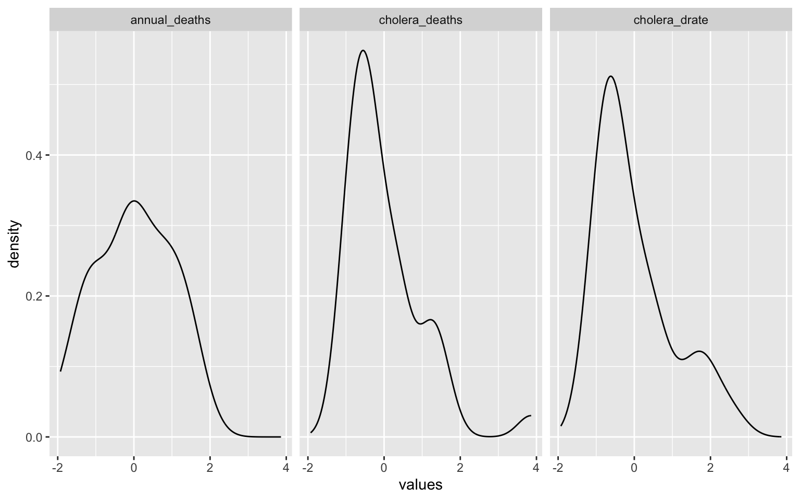

4 Techniques
4.1 Data Analytics
Collecting data to use in a research analysis involves a selection of sources and methods to use for optimizing computational time when downloading and reading the files.
Once data is set and ready to use a further step is required to make the data suitable for the selected model.
In this chapter, an overview of different method of data loading and featuring selection is provided before to get into selecting the best model to use.
The source of data is an important variable. Generally, data can be downloaded by using an API (application programming interface) which allow the user to get access to data directly from source, with the use of specified back-end computations. There are alternatives at using an API; data can be obtained by downloading it directly into the computer, or loaded through library packages.
Usually, available files are provided under various forms such as delimited type of files, .csv, .xls, .json, and other types.
Here is an example of how to use an API for downloading a file directly onto your computer.
Once data is on your computer available and ready to use, the next step is to have a look at it and decide whether to perform some adjustment to the data to make it suitable for your model.
This step includes:
- data manipulation/wrangling
- featuring engineering
- exploratory data analysis
Let’s use the HistData package for an example on William Farr’s Data on Cholera in London, 1849. This set of data contains information about the number of deaths due to Cholera in specific districts, the population density, the water provider and other variables.
This is a type of dataset which can be considered ready to use for some type of models such as linear regression models, but it would require some adjustments if a Bayesian approach is desired.
#> district cholera_drate cholera_deaths popn elevation region
#> 1 Newington 144 907 63074 -2 Kent
#> 2 Rotherhithe 205 352 17208 0 Kent
#> 3 Bermondsey 164 836 50900 0 Kent
#> 4 St George Southwark 161 734 45500 0 Kent
#> 5 St Olave 181 349 19278 2 Kent
#> 6 St Saviour 153 539 35227 2 Kent
#> water annual_deaths pop_dens persons_house house_valpp poor_rate area
#> 1 Battersea 232 101 5.8 3.788 0.075 624
#> 2 Battersea 277 19 5.8 4.238 0.143 886
#> 3 Battersea 267 180 7.0 3.318 0.089 282
#> 4 Battersea 264 66 6.2 3.077 0.134 688
#> 5 Battersea 281 114 7.9 4.559 0.079 169
#> 6 Battersea 292 141 7.1 5.291 0.076 250
#> houses house_val
#> 1 9370 207460
#> 2 2420 59072
#> 3 6663 155175
#> 4 5674 107821
#> 5 2523 90583
#> 6 4659 174732If we are interested in the evolution of mortality due to Cholera. We might want to look at the regional level, how the annual deaths - all causes (annual_deaths), the death’s rate per 10,000 inhabitants (cholera_drate), or is distributed.
Hide code
#> region cholera_drate cholera_deaths annual_deaths
#> 1 Kent 144 907 232
#> 2 Kent 205 352 277
#> 3 Kent 164 836 267
#> 4 Kent 161 734 264
#> 5 Kent 181 349 281
#> 6 Kent 153 539 292Hide code
data %>%
select(-region)%>%
scale()%>%
bind_cols(region=data$region)%>%
pivot_longer(cols = 1:3,names_to = "type",values_to = "values")%>%
ggplot(aes(values))+
geom_density()+
facet_wrap(~type)